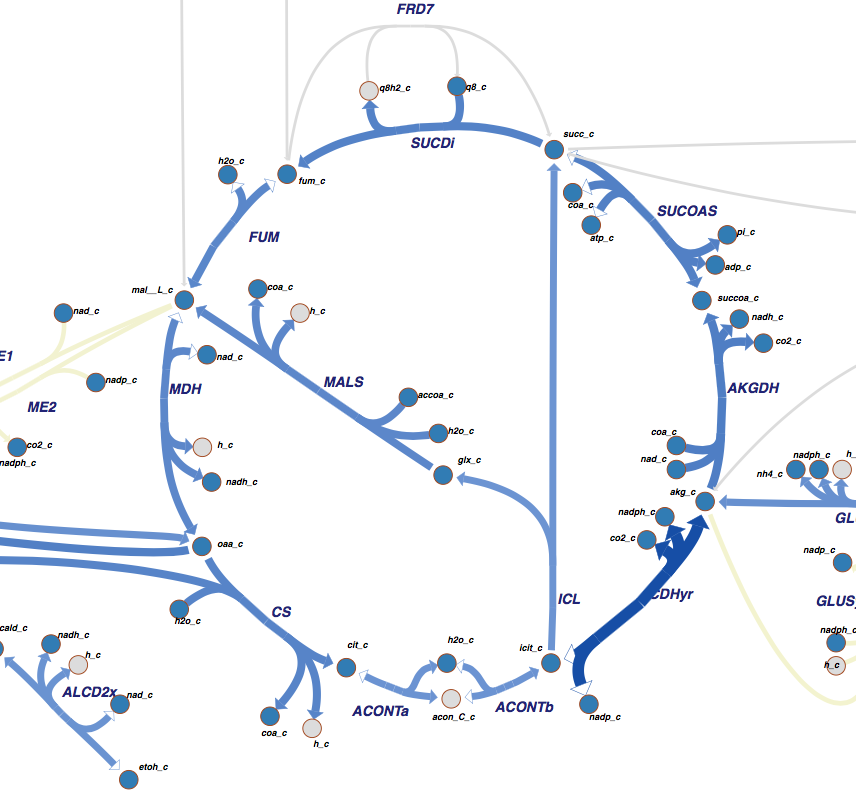
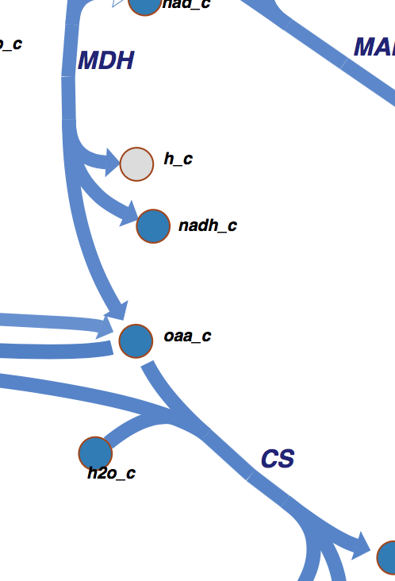

Step Two
Step Two: Using the Map to Isolate Proteins and Ligand
a)find a named protein with a known 3D structure
(identified by a blue arrow)

-select CS (Citrate Synthase)
b)make sure the blue arrow ends or originates at a blue dot
-select oaa_c (Oxaloacetate)

c)select a second protein (blue arrow),
that connects to the first protein's blue dot
-select MLDH (Malate Dehydrogenase)
Return to Tutorial